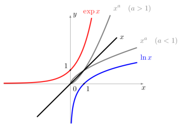

Puissance et Comparaison
Définition :
Par définition, pour \(a>0\) et \(b\in \mathbb{R}\),
\[\displaystyle a^b = \exp\big(b \ln a\big)\]
Attention :
\(\sqrt a = a^{1/2} = \exp\left( \frac12 \ln a\right)\).
\(\sqrt[n] a = a^{1/n} = \exp\left( \frac1n \ln a\right)\) (racine \(n\)-ème).
\(e^x = \exp\left(x \ln e \right) = \exp(x)\).
Les fonctions \(x \mapsto a^x\) s'appellent aussi des fonctions exponentielles et se ramènent systématiquement à la fonction exponentielle classique par l'égalité \(a^x = \exp(x \ln a)\). Il ne faut surtout pas les confondre avec les fonctions puissances \(x \mapsto x^a\).
Remarque :
Soit \(x,y >0\) et \(a,b\in \mathbb{R}\).
\(x^{a+b} = x^ax^b\).
\(x^{-a}=\frac{1}{x^a}\).
\((xy)^a = x^ay^a\).
\((x^a)^b = x^{ab}\).
\(\ln(x^a) = a \ln x\).
Comparons les fonctions \(\ln x\), \(\exp x\) avec \(x\) :
\[\lim_{x\to +\infty} \frac{\ln x}{x} = 0 \qquad \text{ et } \qquad\lim_{x\to +\infty} \frac{\exp x}{x} = +\infty.\]
